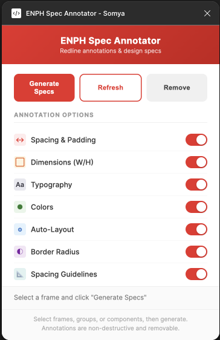
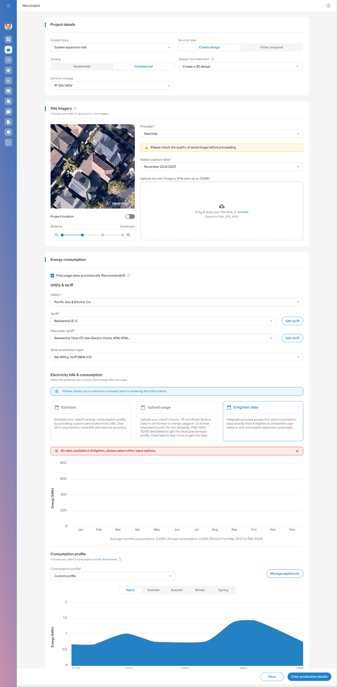
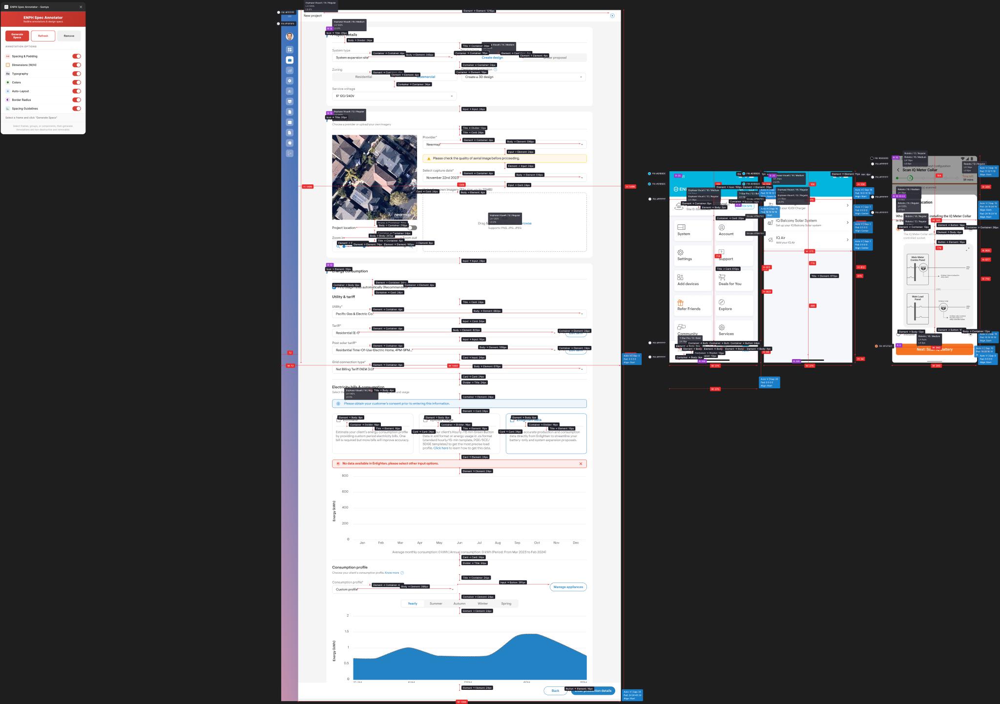

For every new project or UI screen, designers spent ~45 minutes manually annotating spacing, padding, border radii, font sizes, and colour values before handing off to developers. This created a bottleneck — especially with new features shipping frequently.
I built a Figma plugin that analyses any selected frame and generates a full spec sheet — spacing redlines, colour swatches, border radii, auto-layout properties, and typography details — all placed cleanly alongside the original design.


